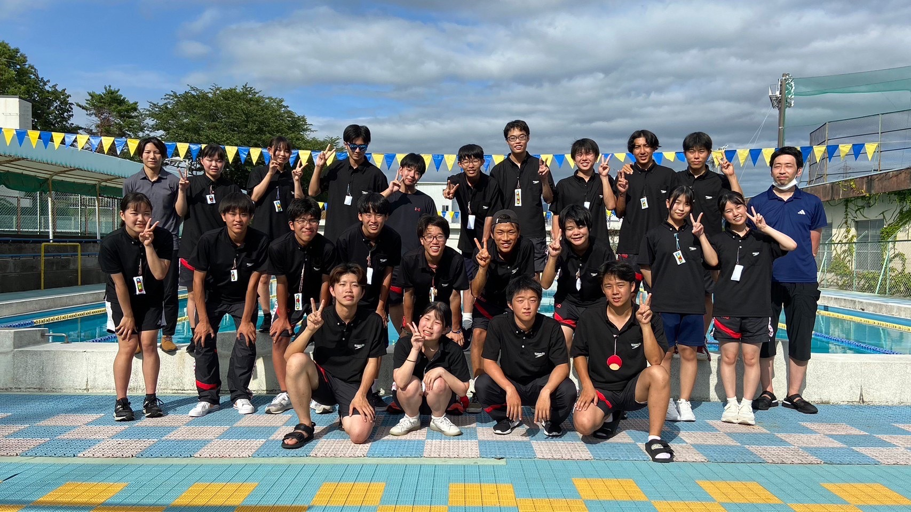
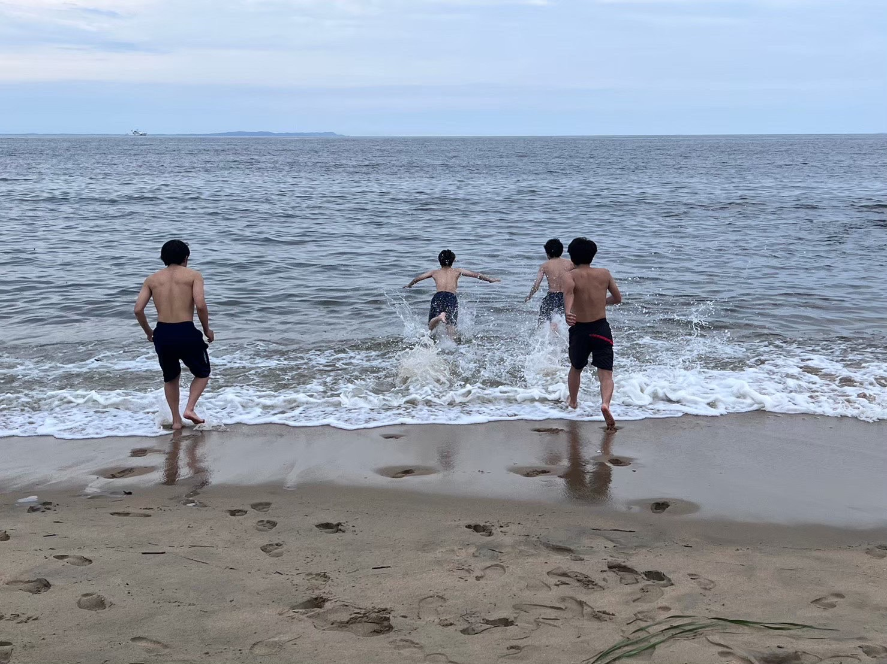

鈴鹿工業高等専門学校
水泳部
水泳部
 
目次
活動紹介
メッセージ
活動日
活動実績
その他
工夫した点・配慮した点
◆活動紹介
男子１９人、女子１３人の総勢３２人で活動しています。
水中トレーニングは、鈴鹿スポーツガーデンの水泳場（室内５０ｍプール）をお借りして、一年を通してしています。また、筋トレや外周などの陸上トレーニングもしています。
大会は三重県ＪＯや三重県総体、東海高専大会、新人戦、水の祭典など、いろいろな大会に参加しています。
また、競技以外にも、たくさん楽しいことをしています！くわしくは
こちら
で！
ご使用のブラウザではサポートされていません
東海高専大会での、リレーの様子です！
◆メッセージ
水泳部の魅力
県営のとてもきれいな
室内５０ｍプール
で泳ぐことができる！
熱い夏
でも、
寒い冬
でも、
気持ちいい温度のプールに入れる
のは最高！
未経験でも大丈夫！
先輩方が丁寧に教えてくれるので、高校から始めた人でもかなり早く泳げるようになった人もいる！
選手を支えるマネージャーが現在４人活躍中！募集中です！
男女学年問わず仲がいいから
毎日楽しい！
体格がよくなる！
決して楽なことばかりではないですが、練習についていけるようになったり、自己ベストを更新できたり、大会で良い結果を残せたり、リレーで他校のチームにみんなで勝つことができたりすると、とてもうれしくなりますし、 達成感を得られます！個人競技、チーム競技のどちらの魅力も味わえる、水泳部にぜひ来てください(^^♪
◆活動日
☆
月曜日・水曜日・金曜日
水中トレーニング(鈴鹿スポーツガーデン)放課後、約２時間
☆
火曜日
陸上トレーニング(鈴鹿高専のプールサイド)放課後、約１時間
◆活動実績
（2023年度）
東海総体出場
全国高専大会出場
昨年まではシンクロもしていて、テレビ出演などもあったそうです！
◆その他
水泳部は、水泳部としての活動だけでなく、部員全員で遊びにいったりもします！例えば、今年はキャンプをしに行ったり、遊園地へ遊びに行ったり、カラオケや海に行ったりしました！
楽しかったことランキング
東海高専大会
カラオケ
ホテル
ゲーム
キャンプ
BBQ
人狼ゲーム
カラオケ
ナガスパ
アンケート
あなたの水泳の得意種目は何ですか？
自由形(クロール)
背泳ぎ
平泳ぎ
バタフライ
質問などございましたら以下のフォームより送信ください。
スイマーの名言をどうぞ
◆工夫した点・配慮した点
まとまりごとに見やすいように、まとまりごとに周りを四角で囲んだ。
写真や動画を入れて、どんなことをしているかや、部内の雰囲気をつかみやすいようにした。
文字の大きさを見やすいようにしたり、他のところよりも読んでほしいところを太字にしたり、色を変えたりした。
認識しやすい色の組み合わせを使ってより見やすいようにした。
箇条書きのところを入れ子にして、わかりやすいようにした。
連絡先 (email アドレス): r05i41 AT ed.cc.suzuka-ct.ac.jp (AT は半角の「＠」に変換して下さい)